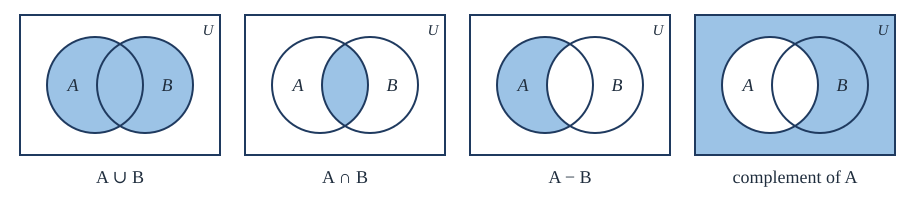
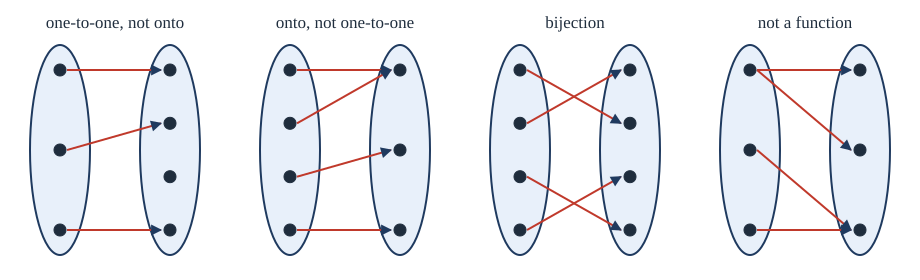

Chapter 4: Sets and Functions¶
The language in which discrete mathematics is written
Learning outcomes
After this chapter you should be able to:
- describe sets in roster and set-builder notation, and decide equality and the subset relation;
- compute unions, intersections, differences, complements, power sets and Cartesian products;
- prove set identities by element-chasing and by membership tables;
- state precisely what a function is, and find its domain, codomain, range, images and preimages;
- decide whether a function is one-to-one, onto or a bijection, and compose and invert functions;
- explain what it means for an infinite set to be countable, and prove that \(\mathbb{Q}\) is countable and \(\mathbb{R}\) is not;
- use summation notation and the formulas for arithmetic and geometric sums.
4.1 Sets¶
Definition: set
A set is an unordered collection of distinct objects, called its elements or members. We write \(a \in A\) if \(a\) is an element of \(A\), and \(a \notin A\) if it is not.
A set can be described by listing its elements in braces (roster notation): \(V = \{a, e, i, o, u\}\). For a large set with a clear pattern we use dots: \(\{1, 2, 3, \dots, 100\}\). Or a set can be described by a property its elements share (set-builder notation):
is the set of even integers, read "the set of integers \(n\) such that \(n = 2k\) for some integer \(k\)".
Two sets are equal if they have the same elements: \(A = B\) means \(\forall x\, (x \in A \leftrightarrow x \in B)\). Order and repetition do not matter, so \(\{1, 2, 3\} = \{3, 1, 2\} = \{1, 1, 2, 3\}\).
The empty set \(\varnothing = \{\}\) has no elements. Note that \(\{\varnothing\}\) is not empty: it is a set with one element, the empty set. Sets can be elements of other sets, just as a folder on a computer can contain other folders.
Subsets¶
Definition: subset
\(A\) is a subset of \(B\), written \(A \subseteq B\), if every element of \(A\) is an element of \(B\): \(\forall x\, (x \in A \to x \in B)\). If \(A \subseteq B\) and \(A \ne B\), then \(A\) is a proper subset of \(B\), written \(A \subset B\).
For every set \(A\), \(\varnothing \subseteq A\) (vacuously: there is no element of \(\varnothing\) that could fail to be in \(A\)) and \(A \subseteq A\). To prove two sets equal, the standard method is to prove \(A \subseteq B\) and \(B \subseteq A\).
Element or subset?
\(\in\) and \(\subseteq\) are different. For \(A = \{1, \{2\}\}\): \(1 \in A\), \(\{2\} \in A\), \(\{1\} \subseteq A\), \(\{\{2\}\} \subseteq A\); but \(2 \notin A\) and \(\{2\} \not\subseteq A\) (because \(2 \notin A\)).
Cardinality and power sets¶
If \(A\) has exactly \(n\) distinct elements, \(A\) is finite and its cardinality is \(\lvert A \rvert = n\). So \(\lvert \varnothing \rvert = 0\) and \(\lvert \{a, \{a\}\} \rvert = 2\).
The power set \(\mathcal{P}(A)\) is the set of all subsets of \(A\). For \(A = \{1, 2, 3\}\):
Theorem 4.1
If \(\lvert A \rvert = n\), then \(\lvert \mathcal{P}(A) \rvert = 2^n\).
Proof. List the elements of \(A\) as \(a_1, \dots, a_n\). A subset is determined by deciding, for each \(a_i\) in turn, whether it is in or out. There are 2 choices for each of the \(n\) elements, so \(2 \cdot 2 \cdots 2 = 2^n\) subsets. (This uses the product rule of Chapter 7; Chapter 6 gives a proof by induction.) \(\blacksquare\)
The proof suggests how a computer stores subsets of a small set \(\{a_1, \dots, a_n\}\): as a string of \(n\) bits, with bit \(i\) equal to 1 when \(a_i\) is in the subset. With \(\{1, 2, 3\}\), the subset \(\{1, 3\}\) is \(101\). Union, intersection and complement then become bitwise OR, AND and NOT (Section 1.8).
4.2 Set operations¶
Fix a universal set \(U\) containing every element under discussion. For subsets \(A\) and \(B\) of \(U\):
| Operation | Notation | Definition |
|---|---|---|
| union | \(A \cup B\) | \(\{x : x \in A \vee x \in B\}\) |
| intersection | \(A \cap B\) | \(\{x : x \in A \wedge x \in B\}\) |
| difference | \(A - B\) | \(\{x : x \in A \wedge x \notin B\}\) |
| complement | \(\overline{A}\) | \(\{x \in U : x \notin A\}\) |
| symmetric difference | \(A \oplus B\) | \(\{x : x \in A \oplus x \in B\}\) |
Table 4.1. Operations on sets. Each is defined by a logical connective.
Sets with \(A \cap B = \varnothing\) are disjoint. Venn diagrams, as in Figure 4.1, picture the operations: a rectangle for \(U\) and circles for the sets.

Example 4.1: Computing with sets
Problem. Let \(U = \{1, 2, \dots, 10\}\), \(A = \{1, 2, 3, 4, 5\}\) and \(B = \{4, 5, 6, 7\}\). Find \(A \cup B\), \(A \cap B\), \(A - B\), \(B - A\), \(\overline{A}\) and \(A \oplus B\).
Solution. \(A \cup B = \{1, \dots, 7\}\); \(A \cap B = \{4, 5\}\); \(A - B = \{1, 2, 3\}\); \(B - A = \{6, 7\}\); \(\overline{A} = \{6, 7, 8, 9, 10\}\); \(A \oplus B = \{1, 2, 3, 6, 7\} = (A - B) \cup (B - A)\).
The sizes are related by a formula you can see in the Venn diagram: the elements of \(A \cap B\) are counted twice in \(\lvert A \rvert + \lvert B \rvert\), so
In Example 4.1, \(7 = 5 + 4 - 2\). This is the simplest case of the principle of inclusion-exclusion (Chapter 7).
4.3 Set identities¶
Because each set operation is defined by a logical connective, every law of logic in Table 1.6 gives a law of sets, with \(\cup\) for \(\vee\), \(\cap\) for \(\wedge\), complement for \(\neg\), \(U\) for \(\mathbf{T}\) and \(\varnothing\) for \(\mathbf{F}\).
| Name | Identity |
|---|---|
| Identity | \(A \cup \varnothing = A\), \(\quad A \cap U = A\) |
| Domination | \(A \cup U = U\), \(\quad A \cap \varnothing = \varnothing\) |
| Idempotent | \(A \cup A = A\), \(\quad A \cap A = A\) |
| Complementation | \(\overline{\overline{A}} = A\) |
| Commutative | \(A \cup B = B \cup A\), \(\quad A \cap B = B \cap A\) |
| Associative | \(A \cup (B \cup C) = (A \cup B) \cup C\), \(\quad A \cap (B \cap C) = (A \cap B) \cap C\) |
| Distributive | \(A \cup (B \cap C) = (A \cup B) \cap (A \cup C)\), \(\quad A \cap (B \cup C) = (A \cap B) \cup (A \cap C)\) |
| De Morgan | \(\overline{A \cup B} = \overline{A} \cap \overline{B}\), \(\quad \overline{A \cap B} = \overline{A} \cup \overline{B}\) |
| Absorption | \(A \cup (A \cap B) = A\), \(\quad A \cap (A \cup B) = A\) |
| Complement | \(A \cup \overline{A} = U\), \(\quad A \cap \overline{A} = \varnothing\) |
Table 4.2. Set identities.
There are three ways to prove a set identity.
1. Element-chasing. Show each side is a subset of the other, by taking an arbitrary element of one side and showing it lies in the other.
Example 4.2: De Morgan's law by element-chasing
Theorem. \(\overline{A \cap B} = \overline{A} \cup \overline{B}\).
Proof. (\(\subseteq\)) Let \(x \in \overline{A \cap B}\). Then \(x \notin A \cap B\), so it is not the case that \(x \in A\) and \(x \in B\). By De Morgan's law of logic, \(x \notin A\) or \(x \notin B\); that is, \(x \in \overline{A}\) or \(x \in \overline{B}\), so \(x \in \overline{A} \cup \overline{B}\).
(\(\supseteq\)) Each step above is reversible: if \(x \in \overline{A} \cup \overline{B}\) then \(x \notin A\) or \(x \notin B\), so \(x \notin A \cap B\), so \(x \in \overline{A \cap B}\). \(\blacksquare\)
2. Membership tables. Like a truth table: one row for each combination of "in" (1) and "out" (0) of the sets, and a column for each expression.
Example 4.3: A distributive law by membership table
Problem. Prove \(A \cap (B \cup C) = (A \cap B) \cup (A \cap C)\).
Solution.
| \(A\) | \(B\) | \(C\) | \(B \cup C\) | \(A \cap (B \cup C)\) | \(A \cap B\) | \(A \cap C\) | \((A \cap B) \cup (A \cap C)\) |
|---|---|---|---|---|---|---|---|
| 1 | 1 | 1 | 1 | 1 | 1 | 1 | 1 |
| 1 | 1 | 0 | 1 | 1 | 1 | 0 | 1 |
| 1 | 0 | 1 | 1 | 1 | 0 | 1 | 1 |
| 1 | 0 | 0 | 0 | 0 | 0 | 0 | 0 |
| 0 | 1 | 1 | 1 | 0 | 0 | 0 | 0 |
| 0 | 1 | 0 | 1 | 0 | 0 | 0 | 0 |
| 0 | 0 | 1 | 1 | 0 | 0 | 0 | 0 |
| 0 | 0 | 0 | 0 | 0 | 0 | 0 | 0 |
Columns 5 and 8 agree, so the sets are equal.
3. Algebra with known identities, as with logical equivalences.
Example 4.4: An identity by algebra
Problem. Show that \(\overline{A \cup (B \cap C)} = (\overline{C} \cup \overline{B}) \cap \overline{A}\).
Solution.
4.4 Cartesian products¶
Sets are unordered, but often order matters: the point \((2, 3)\) is not the point \((3, 2)\). An ordered pair \((a, b)\) has a first and a second component, and \((a, b) = (c, d)\) exactly when \(a = c\) and \(b = d\). More generally an ordered \(n\)-tuple \((a_1, \dots, a_n)\) has \(n\) components in order.
Definition: Cartesian product
The Cartesian product of \(A\) and \(B\) is \(A \times B = \{(a, b) : a \in A, b \in B\}\). More generally, \(A_1 \times \dots \times A_n\) is the set of \(n\)-tuples \((a_1, \dots, a_n)\) with \(a_i \in A_i\). We write \(A^n\) for \(A \times A \times \dots \times A\) (\(n\) factors).
For \(A = \{a, b\}\) and \(B = \{1, 2, 3\}\), \(A \times B = \{(a,1), (a,2), (a,3), (b,1), (b,2), (b,3)\}\). In general \(\lvert A \times B \rvert = \lvert A \rvert \cdot \lvert B \rvert\), and \(A \times B \ne B \times A\) unless \(A = B\) or one of them is empty. The plane is \(\mathbb{R}^2\); a row of a database table with columns from sets \(A_1, \dots, A_n\) is an element of \(A_1 \times \dots \times A_n\); and the set of bit strings of length 8 is \(\{0, 1\}^8\), which has \(2^8 = 256\) elements.
4.5 Functions¶
Definition: function
A function \(f\) from a set \(A\) to a set \(B\), written \(f : A \to B\), assigns to each element \(a\) of \(A\) exactly one element \(f(a)\) of \(B\). \(A\) is the domain of \(f\) and \(B\) its codomain. If \(f(a) = b\), then \(b\) is the image of \(a\) and \(a\) is a preimage of \(b\). The range (or image) of \(f\) is the set of all images, \(f(A) = \{f(a) : a \in A\}\), which is a subset of \(B\).
The two conditions, "each" and "exactly one", are both essential. A rule that leaves some element of \(A\) without an image, or gives some element two images, is not a function from \(A\) to \(B\). Formally, a function is identified with its graph, the set of pairs \(\{(a, f(a)) : a \in A\} \subseteq A \times B\), in which every \(a \in A\) appears as a first component exactly once.
Example 4.5: Functions and non-functions
Problem. Which of these define functions from \(\mathbb{R}\) to \(\mathbb{R}\)? (a) \(f(x) = x^2\). (b) \(g(x) = 1/x\). (c) \(h(x) = \pm\sqrt{\lvert x \rvert}\). (d) \(k(x) = \lfloor x \rfloor\).
Solution. (a) Yes. Its range is \(\{y : y \ge 0\}\), smaller than the codomain \(\mathbb{R}\). (b) No: \(g(0)\) is undefined. It is a function from \(\mathbb{R} - \{0\}\) to \(\mathbb{R}\). (c) No: it gives each \(x \ne 0\) two values. (d) Yes: the floor \(\lfloor x \rfloor\) is the largest integer less than or equal to \(x\). So \(\lfloor 2.7 \rfloor = 2\) and \(\lfloor -2.7 \rfloor = -3\).
The floor function and its partner, the ceiling \(\lceil x \rceil\) (the smallest integer greater than or equal to \(x\), so \(\lceil 2.1 \rceil = 3\)), appear constantly in computing. A file of \(n\) bytes stored in blocks of 512 bytes needs \(\lceil n/512 \rceil\) blocks.
Images and preimages of sets¶
For \(S \subseteq A\), the image of \(S\) is \(f(S) = \{f(s) : s \in S\}\). For \(T \subseteq B\), the preimage (or inverse image) of \(T\) is \(f^{-1}(T) = \{a \in A : f(a) \in T\}\). The preimage is defined for every function, whether or not \(f\) has an inverse. For \(f(x) = x^2\) on \(\mathbb{Z}\), \(f(\{-2, 1, 2\}) = \{1, 4\}\) and \(f^{-1}(\{4, 5\}) = \{-2, 2\}\).
4.6 One-to-one and onto¶
Definitions: injection, surjection, bijection
Let \(f : A \to B\).
- \(f\) is one-to-one (or injective) if different elements have different images: \(\forall a\, \forall a'\, \bigl(f(a) = f(a') \to a = a'\bigr)\).
- \(f\) is onto (or surjective) if every element of \(B\) is an image: \(\forall b \in B\; \exists a \in A\; f(a) = b\). That is, the range equals the codomain.
- \(f\) is a bijection (or one-to-one correspondence) if it is both one-to-one and onto.
Figure 4.2 shows the possibilities as arrow diagrams between small finite sets.

To prove \(f\) is one-to-one, assume \(f(a) = f(a')\) and deduce \(a = a'\). To prove \(f\) is onto, take an arbitrary \(b \in B\) and find an \(a\) with \(f(a) = b\). To disprove either, give a counterexample.
Example 4.6: Checking injectivity and surjectivity
Problem. Decide whether each function is one-to-one and whether it is onto. (a) \(f : \mathbb{Z} \to \mathbb{Z}\), \(f(n) = 2n + 3\). (b) \(g : \mathbb{R} \to \mathbb{R}\), \(g(x) = 2x + 3\). (c) \(h : \mathbb{Z} \to \mathbb{N}\), \(h(n) = n^2\).
Solution.
(a) One-to-one: if \(2n + 3 = 2m + 3\) then \(2n = 2m\), so \(n = m\). Not onto: \(2n + 3\) is always odd, so \(4\) has no preimage.
(b) One-to-one: the same argument. Onto: given \(y \in \mathbb{R}\), let \(x = (y - 3)/2\); then \(g(x) = y\). So \(g\) is a bijection. The same formula as in (a) behaves differently because the domain and codomain differ.
(c) Not one-to-one: \(h(-1) = h(1) = 1\). Not onto: \(2\) is not a perfect square.
For finite sets of the same size, the two properties coincide.
Theorem 4.2
If \(A\) and \(B\) are finite sets with \(\lvert A \rvert = \lvert B \rvert\), then a function \(f : A \to B\) is one-to-one if and only if it is onto.
Proof. Let \(\lvert A \rvert = \lvert B \rvert = n\). If \(f\) is one-to-one, the \(n\) elements of \(A\) have \(n\) different images, so the range has \(n\) elements; being a subset of \(B\), which has \(n\) elements, the range is \(B\), and \(f\) is onto. Conversely, if \(f\) is onto, the range has \(n\) elements; if two elements of \(A\) shared an image, the \(n\) elements of \(A\) would have at most \(n - 1\) images, a contradiction. So \(f\) is one-to-one. \(\blacksquare\)
4.7 Composition and inverses¶
Definition: composition
For \(g : A \to B\) and \(f : B \to C\), the composition \(f \circ g : A \to C\) is defined by \((f \circ g)(a) = f(g(a))\): apply \(g\) first, then \(f\).
For \(f(x) = x^2\) and \(g(x) = x + 1\) on \(\mathbb{R}\), \((f \circ g)(x) = (x + 1)^2\) while \((g \circ f)(x) = x^2 + 1\). Composition is not commutative, but it is associative: \(f \circ (g \circ h) = (f \circ g) \circ h\), because both send \(a\) to \(f(g(h(a)))\).
The identity function \(\iota_A : A \to A\) is \(\iota_A(a) = a\).
Definition: inverse function
If \(f : A \to B\) is a bijection, its inverse \(f^{-1} : B \to A\) is the function that sends \(b\) to the unique \(a\) with \(f(a) = b\). Then \(f^{-1} \circ f = \iota_A\) and \(f \circ f^{-1} = \iota_B\).
A function has an inverse exactly when it is a bijection: one-to-one ensures each \(b\) has at most one preimage, so \(f^{-1}(b)\) is well defined, and onto ensures it has at least one, so \(f^{-1}\) is defined on all of \(B\). For \(g(x) = 2x + 3\) on \(\mathbb{R}\), \(g^{-1}(y) = (y - 3)/2\), found by solving \(y = 2x + 3\) for \(x\).
Two meanings of the same symbol
\(f^{-1}(T)\) for a set \(T\) is the preimage, defined for every function. \(f^{-1}(b)\) for an element \(b\) means the inverse function, defined only when \(f\) is a bijection. And \(f^{-1}(x)\) never means \(1/f(x)\).
Example 4.7: Compositions preserve injectivity
Theorem. If \(g : A \to B\) and \(f : B \to C\) are both one-to-one, then \(f \circ g\) is one-to-one.
Proof. Suppose \((f \circ g)(a) = (f \circ g)(a')\), that is, \(f(g(a)) = f(g(a'))\). Since \(f\) is one-to-one, \(g(a) = g(a')\). Since \(g\) is one-to-one, \(a = a'\). \(\blacksquare\)
The same holds for "onto" (Exercise 7), and so the composition of two bijections is a bijection.
4.8 Infinite sets and countability¶
How do we compare the sizes of infinite sets? Following Georg Cantor, we say two sets have the same cardinality if there is a bijection between them. For finite sets this agrees with counting. For infinite sets it gives surprises.
Definition: countable
A set is countably infinite if it has the same cardinality as \(\mathbb{Z}^{+} = \{1, 2, 3, \dots\}\); that is, if its elements can be listed as a sequence \(a_1, a_2, a_3, \dots\) in which every element appears exactly once. A set is countable if it is finite or countably infinite, and uncountable otherwise.
Example 4.8: The integers are countable
Problem. Show that \(\mathbb{Z}\) is countable, although it seems "twice as big" as \(\mathbb{Z}^{+}\).
Solution. List the integers as \(0, 1, -1, 2, -2, 3, -3, \dots\). Every integer appears exactly once. As a formula, \(f(n) = n/2\) for even \(n\) and \(f(n) = -(n-1)/2\) for odd \(n\) is a bijection from \(\mathbb{Z}^{+}\) to \(\mathbb{Z}\).
Theorem 4.3
The set \(\mathbb{Q}^{+}\) of positive rational numbers is countable.
Proof. Arrange the fractions \(p/q\) with \(p, q \in \mathbb{Z}^{+}\) in an infinite grid, with \(p/q\) in row \(q\) and column \(p\). List them along the diagonals on which \(p + q\) is constant: first \(p + q = 2\) (\(1/1\)), then \(p + q = 3\) (\(2/1, 1/2\)), then \(p + q = 4\) (\(3/1, 2/2, 1/3\)), and so on, skipping any fraction not in lowest terms (such as \(2/2\)), since its value has already appeared. Each diagonal is finite, so every positive rational is reached after finitely many steps and appears exactly once:
So \(\mathbb{Q}^{+}\) is countable. \(\blacksquare\)
Not every infinite set is countable. Cantor's diagonal argument shows that the real numbers cannot be listed.
Theorem 4.4 (Cantor)
The set of real numbers in the interval \((0, 1)\) is uncountable; hence \(\mathbb{R}\) is uncountable.
Proof. Suppose, for a contradiction, that the reals in \((0, 1)\) can be listed as \(r_1, r_2, r_3, \dots\). Write each in decimal:
(For numbers with two decimal expansions, such as \(0.5000\dots = 0.4999\dots\), use the one ending in zeros.) Build a new number \(x = 0.x_1 x_2 x_3 \dots\) by changing the diagonal digits: let \(x_i = 4\) if \(d_{ii} \ne 4\), and \(x_i = 5\) if \(d_{ii} = 4\). Then \(x\) is in \((0, 1)\), and its expansion uses only the digits 4 and 5, so it is its only decimal expansion. But \(x\) differs from \(r_i\) in the \(i\)-th digit, for every \(i\), so \(x\) is not in the list. This contradicts the assumption that the list contained every real number in \((0, 1)\). \(\blacksquare\)
The same diagonal idea proves that the power set of any set is strictly larger than the set, and, in Chapter 14, that some problems cannot be solved by any program. Since the set of all computer programs is countable (each program is a finite string over a finite alphabet) but the set of all functions from \(\mathbb{N}\) to \(\{0, 1\}\) is uncountable, most such functions cannot be computed by any program.
4.9 Sequences and sums¶
A sequence is a function from a set of integers (usually \(\mathbb{N}\) or \(\mathbb{Z}^{+}\)) to some set; we write \(a_n\) for the image of \(n\). Two families are especially important.
- An arithmetic progression \(a, a + d, a + 2d, \dots\) has \(n\)-th term \(a_n = a + nd\) (starting from \(a_0 = a\)).
- A geometric progression \(a, ar, ar^2, \dots\) has \(a_n = ar^n\).
The sum \(a_m + a_{m+1} + \dots + a_n\) is written with summation notation:
The letter \(k\) is the index of summation; any letter will do. Two sums are needed again and again.
Theorem 4.5 (two standard sums)
For every positive integer \(n\),
Proof. For the first, write the sum \(S\) forwards and backwards and add:
For the second, let \(S = 1 + r + \dots + r^n\). Then \(rS = r + r^2 + \dots + r^{n+1}\), and subtracting, \(rS - S = r^{n+1} - 1\), so \(S = (r^{n+1} - 1)/(r - 1)\). \(\blacksquare\)
For example, \(1 + 2 + 4 + \dots + 2^{n} = 2^{n+1} - 1\): a binary number with \(n + 1\) ones is one less than the next power of 2. Chapter 6 proves formulas like these by induction.
4.10 Summary¶
Summary
- A set is determined by its elements; \(A = B\) is usually proved by showing \(A \subseteq B\) and \(B \subseteq A\). Distinguish \(\in\) from \(\subseteq\).
- \(\lvert \mathcal{P}(A) \rvert = 2^{\lvert A \rvert}\) and \(\lvert A \times B \rvert = \lvert A \rvert \cdot \lvert B \rvert\).
- Union, intersection, difference and complement correspond to \(\vee\), \(\wedge\), "and not" and \(\neg\), so each law of logic gives a set identity. Prove identities by element-chasing, membership tables or algebra.
- A function \(f : A \to B\) gives each element of \(A\) exactly one image in \(B\). It is one-to-one if distinct inputs have distinct images, onto if its range is \(B\), and a bijection if both. Exactly the bijections have inverses.
- Composition \(f \circ g\) means "apply \(g\), then \(f\)"; it is associative but not commutative.
- \(\mathbb{Z}\) and \(\mathbb{Q}\) are countable; \(\mathbb{R}\) is uncountable, by Cantor's diagonal argument.
- \(\sum_{k=1}^{n} k = n(n+1)/2\) and \(\sum_{k=0}^{n} r^k = (r^{n+1} - 1)/(r - 1)\).
4.11 Exercises¶
Exercise 1
Let \(A = \{1, 2, \{1, 2\}\}\). True or false: (a) \(\{1, 2\} \in A\); (b) \(\{1, 2\} \subseteq A\); (c) \(\{\{1, 2\}\} \subseteq A\); (d) \(\varnothing \in A\); (e) \(\lvert A \rvert = 3\).
Answer
(a) True. (b) True: 1 and 2 are elements of \(A\). (c) True: its only element, \(\{1, 2\}\), is in \(A\). (d) False: \(\varnothing\) is a subset of \(A\) but not an element. (e) True.
Exercise 2
List \(\mathcal{P}(\{a, \varnothing\})\).
Answer
\(\{\varnothing, \{a\}, \{\varnothing\}, \{a, \varnothing\}\}\), four elements, as Theorem 4.1 predicts.
Exercise 3
Prove that \(A - B = A \cap \overline{B}\), and use it to show that \(A - (B \cup C) = (A - B) \cap (A - C)\).
Answer
\(x \in A - B \iff x \in A \wedge x \notin B \iff x \in A \wedge x \in \overline{B} \iff x \in A \cap \overline{B}\). Then \(A - (B \cup C) = A \cap \overline{B \cup C} = A \cap \overline{B} \cap \overline{C} = (A \cap \overline{B}) \cap (A \cap \overline{C}) = (A - B) \cap (A - C)\), using De Morgan, and idempotence to duplicate \(A\).
Exercise 4
Is it true that \(A \cup (B - C) = (A \cup B) - C\) for all sets? Prove it or give a counterexample.
Answer
False. Take \(A = C = \{1\}\) and \(B = \varnothing\). Then \(A \cup (B - C) = \{1\}\) but \((A \cup B) - C = \varnothing\).
Exercise 5
For \(A = \{0, 1\}\), list \(A^3\) and give \(\lvert A \times \mathcal{P}(A) \rvert\).
Answer
\(A^3\) consists of the eight triples \((0,0,0), (0,0,1), (0,1,0), (0,1,1), (1,0,0), (1,0,1), (1,1,0), (1,1,1)\). \(\lvert A \times \mathcal{P}(A) \rvert = 2 \cdot 4 = 8\).
Exercise 6
Determine whether \(f : \mathbb{Z} \times \mathbb{Z} \to \mathbb{Z}\), \(f(m, n) = m + n\), is one-to-one and whether it is onto.
Answer
Not one-to-one: \(f(1, 0) = f(0, 1) = 1\). Onto: for any \(k\), \(f(k, 0) = k\).
Exercise 7
Prove that if \(g : A \to B\) and \(f : B \to C\) are onto, then \(f \circ g\) is onto.
Answer
Let \(c \in C\). Since \(f\) is onto, \(c = f(b)\) for some \(b \in B\). Since \(g\) is onto, \(b = g(a)\) for some \(a \in A\). Then \((f \circ g)(a) = f(g(a)) = f(b) = c\). \(\blacksquare\)
Exercise 8
Find the inverse of \(f : \mathbb{R} \to \mathbb{R}\), \(f(x) = x^3 + 1\), and check that \(f^{-1}(f(x)) = x\).
Answer
Solve \(y = x^3 + 1\): \(x = \sqrt[3]{y - 1}\), so \(f^{-1}(y) = \sqrt[3]{y - 1}\). Then \(f^{-1}(f(x)) = \sqrt[3]{x^3 + 1 - 1} = x\). (Every real number has exactly one real cube root, so \(f\) is a bijection.)
Exercise 9
Show that the set of positive even integers is countably infinite.
Answer
\(f : \mathbb{Z}^{+} \to \{2, 4, 6, \dots\}\), \(f(n) = 2n\), is a bijection: one-to-one because \(2n = 2m\) implies \(n = m\), onto because every positive even number is \(2n\) for some positive \(n\).
Exercise 10
Evaluate \(\sum_{k=1}^{50} (2k - 1)\) and \(\sum_{k=0}^{9} 3 \cdot 2^k\).
Answer
\(\sum (2k - 1) = 2 \cdot \frac{50 \cdot 51}{2} - 50 = 2550 - 50 = 2500 = 50^2\) (the sum of the first \(n\) odd numbers is \(n^2\)). \(\sum 3 \cdot 2^k = 3(2^{10} - 1) = 3 \cdot 1023 = 3069\).
4.12 Quiz¶
Check your understanding of sets and functions
Exercise 1
How many subsets does a set with 6 elements have?
Answer
64
Exercise 2
Is the empty set an element of every set?
- yes
- no
Answer
no
The empty set is a subset of every set, but an element only of sets that contain it.
Exercise 3
If |A| = 3 and |B| = 4, how many elements does A × B have?
Answer
12
Exercise 4
f from the integers to the integers, f(n) = 2n + 3, is
- one-to-one but not onto
- onto but not one-to-one
- a bijection
- neither
Answer
one-to-one but not onto
Exercise 5
A function has an inverse function exactly when it is
- one-to-one
- onto
- a bijection
- defined on a finite set
Answer
a bijection
Exercise 6
Which set is uncountable?
- the integers
- the rational numbers
- the real numbers
- the even positive integers
Answer
the real numbers
Exercise 7
What is the floor of -2.5?
Answer
-3